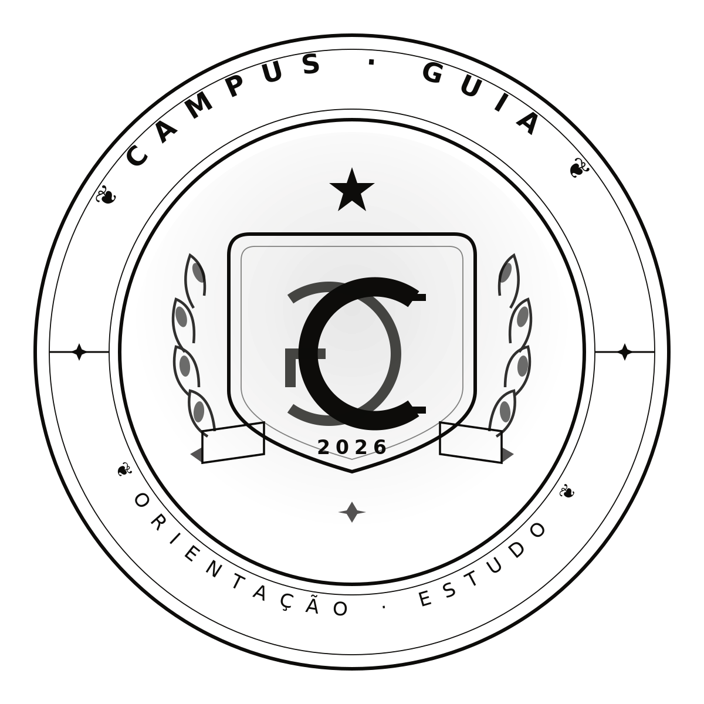

O Programa de Educação Tutorial reúne estudantes num grupo de longa duração que vive o tripé universitário inteiro, com tutoria de um professor e bolsa para os integrantes.
O PET é um programa do MEC em que grupos de estudantes de graduação desenvolvem, juntos e sob a tutoria de um professor, atividades de ensino, pesquisa e extensão de forma integrada.
O PET é, talvez, a vivência mais completa entre as bolsas acadêmicas. Em vez de focar numa única frente, como pesquisa (PIBIC) ou docência (PIBID), o grupo PET trabalha o tripé universitário inteiro ao mesmo tempo: ensino, pesquisa e extensão. A sigla significa Programa de Educação Tutorial.
Cada grupo é formado por um conjunto de bolsistas de um mesmo curso (ou de área afim) e conduzido por um professor tutor. Os integrantes planejam e executam projetos coletivos ao longo de boa parte da graduação, o que dá ao PET um caráter de formação continuada que os programas de ciclo anual não têm. O programa é mantido pelo MEC.
É a experiência mais formativa desta lista. Por reunir um grupo fixo ao longo de anos, o PET desenvolve autonomia, trabalho em equipe, gestão de projetos e protagonismo, competências que vão muito além das notas.
Quem passa pelo PET costuma sair com uma bagagem de liderança e visão de conjunto da universidade que poucos outros programas oferecem.

Os principais editais e oportunidades abertos para estudantes brasileiros, direto na sua caixa de entrada. Gratuito.